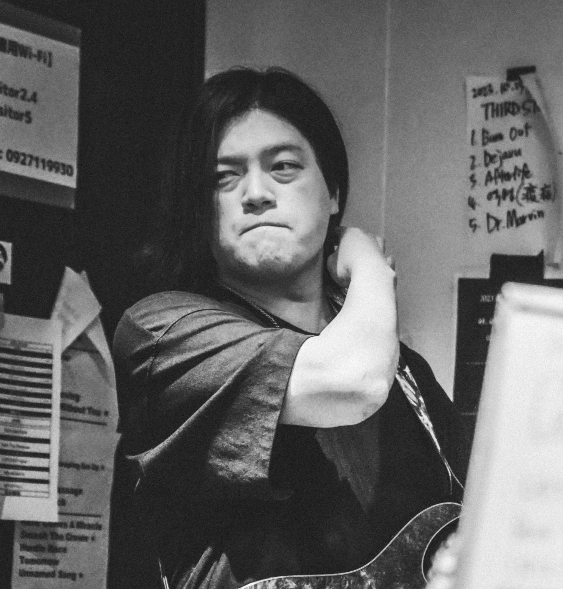

Concept
当サイトは、多彩な表情を持つギターフレーズを軸にした、高品質なロック・ポップス音源のフリーライブラリです。 動画制作、Webサイト、ボイスドラマ、各種クリエイティブ作品の背景に馴染む、等身大でクオリティの高いインストゥルメンタル楽曲を幅広く公開しています。
爽快感あふれる軽快なトラックから、心地よい躍動感と楽器のリアルな熱量を持ったサウンドまで、作品に豊かなストーリー性をプラスする音源を随時アーカイブしていきます。
Profile

yossy / 齋藤 嘉裕
Composer & Guitarist / Web Developer (Learning)
10代からギタリストとして音楽活動を開始、
現在はWebの可能性に魅了され、フロントエンドを中心に勉強中。
過去に培った「音を組み立てる創造力」と「ユーザーの心を動かす表現力」をベースに、
デザインとコードの力で新しい価値を生み出すことを目指しています。
BIOGRAPHY
高校2年生の時、Acid Black CherryやX JAPANとの出会いをきっかけにバンドの存在に強く惹かれ、なかでもX JAPANのHIDEに激しい憧れを抱いてギターを手にしました。基礎から叩き込むため、高校卒業まで講師のもとで徹底的にギターの技術向上に励みました。
その後、より専門的な知識を深めるため「九州ビジュアルアーツ音響学科」へ入学。2年間にわたり、ギター演奏のスキルだけでなく、作曲理論やDAWを用いた高度な音楽制作について体系的に学びました。
卒業後はアルバイトと両立しながら妥協のない音楽活動を継続。自身が所属するバンドでは、地元・九州をはじめ大阪や東京を巡る大規模なCDリリースツアーを敢行。主催イベントも開催し、数多くの観客を集め盛況を収めるなど、現場での実践的なエンターテインメント経験を積んできました。
バンド脱退後はその作曲センスを活かし、ローカルアイドルグループへの楽曲提供を行うなど、コンポーザーとしての実績も重ねています。現在は、新たに「ANTISTALL」というバンドを結成し、現役のギタリスト兼コンポーザーとして今もなおリアルな音楽を発信し続けています。
CREATIVE BELIEF
シンプルで格好いいを、緻密に。
目指すのは「シンプルで格好いい」音楽。しかし、単にシンプルなだけでなく、その削ぎ落とされた構成の中に「いかに緻密なテクニックとフックを詰め込めるか」に情熱を注いでいます。楽器隊はボーカルを引き立てる装飾であるという信念のもと、引き算の美学を意識したアレンジを行っています。
WEB CODING FOCUS
機能美と、心地よいテンポ感。
一見シンプルで美しく、誰もが直感的に迷わず使えること。その洗練されたUIの裏側に、ストレスを感じさせないシームレスな非同期遷移（SPA化）などの確かな技術を詰め込む開発スタイルを大切にしています。音楽制作と同様、ユーザー体験（UX）を第一に考えたサイト構築を追求しています。
FUTURE VISION
今後はライフワークである音楽活動も大切に続けながら、フロントエンド技術を軸としたWebエンジニアとして、チームやクライアントから深く信頼され、真っ先に「求められる存在」になりたいと考えています。
Sound Creative
Web Tech (Learning)
Gear Specs
使用機材
- Main Guitar
- Ibanez RG927WBBZ-TGF 7-String Premium, Buckeye Burl Top
- Ibanez Premium RG870QMZ,Black Ice / BI
- YAMAHA BB235,Black / BL
- DAW / Environment
- Logic Pro11 / Line6 Helix
- Sound Genre
- Slash Metal, Hard Rock